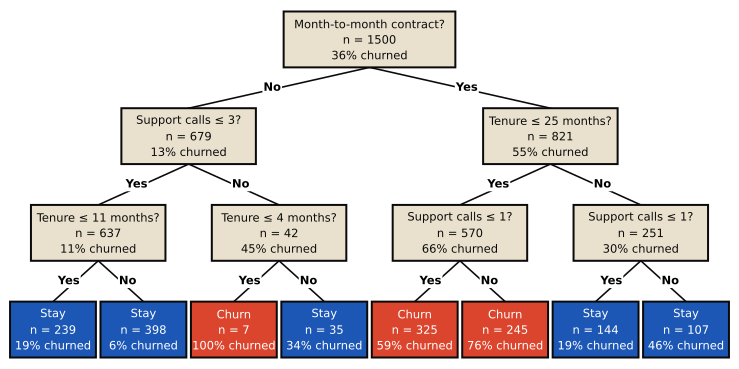
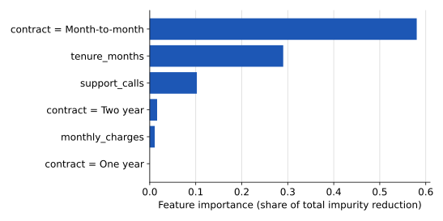

Classification
Decision Trees: Splitting Data into Clear Decisions
A telecom company wants to know which customers are about to cancel their subscription. Instead of a complicated formula, a decision tree answers this with a few simple questions: Is the customer on a monthly contract? Have they been with the company for less than a year? Did they call support more than twice last month? Follow the answers from top to bottom, and you reach a prediction: churn or stay.
This is what makes decision trees so popular. The model is a set of if/else rules that anyone can read, check and explain to a colleague. It can also handle numbers and categories together, without much preparation.
In this post, you will learn how a tree makes a prediction, how it chooses where to split, how to build one in Python, and how to keep it from memorizing the training data. Decision trees solve the same kind of problem as Logistic Regression, predicting a yes/no outcome, but they find the answer through rules instead of coefficients.
In this article
Part 1 · Understand
Part 2 · Build
Part 3 · Interpret
Part 1 · Understand
How a Decision Tree Makes a Prediction
Let’s follow one customer through a small churn tree. Maria has been a customer for 8 months, pays month to month, and called support three times last month.
The tree starts at the top with its first question: Is the contract month-to-month? Maria’s answer is yes, so we move down the “yes” branch. The next question is Has the customer been with us for less than 12 months? Again, yes. The last question is Did the customer call support more than twice last month? Yes. We arrive at a box with no further questions, and it says: churn.
Every part of the tree has a name:
- Root node. The first question, at the top. It splits all customers.
- Branch. One possible answer to a question (yes or no).
- Internal node. A question further down the tree.
- Leaf. A final box that gives the prediction. A leaf does not only say “churn” or “stay”. It also holds the share of training customers who ended up there, for example 78% churned, and the tree reports this share as its churn probability. It is only a share of training customers, not a calibrated confidence score.
To predict for a new customer, you only follow the answers from the root down to a leaf. No calculation is needed, so a tree is easy to check by hand and to explain to a colleague.
How a Decision Tree Chooses Its Splits
In Chart 1 the tree asked about the contract first. Why not tenure or support calls? The tree does not guess. At every step it tries many possible questions and keeps the one that separates churners from stayers best. To compare questions, it needs a score for how mixed a group of customers is.
Gini Impurity: How Mixed Is a Group?
Start with an intuition. Imagine randomly selecting two customers from a group, putting the first one back, and then selecting the second. If everyone in the group churned, both customers will always have the same outcome. The group is pure. If half churned and half stayed, the two customers have a 50% probability of having different outcomes. This is the most mixed a group can be when there are two classes.
Gini impurity measures the probability that two randomly selected customers have different outcomes. It ranges from 0 to 0.5 for a two-class problem. A value of 0 means the group is perfectly pure, while a value closer to 0.5 indicates a more mixed group.
The formula
Gini = 1 − (pchurn2 + pstay2)
Where:
pi = Number of observations in class iTotal observations in the group
Let's calculate it
Take a group of 20 customers:
- 8 customers churned (40%).
- 12 customers stayed (60%).
The class proportions are 0.40 and 0.60.
Gini = 1 − (0.402 + 0.602) = 1 − (0.16 + 0.36) = 0.48
What does 0.48 tell us?
A Gini impurity of 0.48 is close to the maximum of 0.5, meaning the group is highly mixed.
If we predicted "Stay" for all 20 customers, we would misclassify 8 of them (40%).
The tree's goal is to find questions that split this mixed group into smaller, more homogeneous groups. It evaluates each potential split by calculating the weighted Gini impurity of the resulting groups. The split with the lowest weighted impurity is preferred.
| Mix of the group | Churned / stayed | Gini impurity | Misclassification rate |
|---|---|---|---|
| 0% / 100% | 0.00 | 0.00 | |
| 40% / 60% (our 20 customers) | 0.48 | 0.40 | |
| 50% / 50% | 0.50 | 0.50 |
The more evenly mixed the group, the higher the Gini impurity. For the 50/50 group the calculation is 1 − (0.502 + 0.502) = 0.50, and for a pure group it is 1 − (02 + 12) = 0.
Watch out
Gini impurity is not the same as the misclassification rate. The misclassification rate asks: if we predict the majority outcome for everyone in this group, how many customers are wrong? For our 20 customers that is 8 out of 20, or 0.40. Gini impurity measures how mixed the group is and falls more smoothly as the groups get purer. That makes it a better guide for choosing splits: a split can make the groups cleaner without changing a single majority prediction, and only the Gini value shows this.
Comparing Two Possible Splits
Split A asks “Is the contract month-to-month?” and splits the 20 customers into two groups of 10:
| Group | Churned / stayed | Gini |
|---|---|---|
| All 20 customers | 8 / 12 | 0.48 |
| Month-to-month (10) | 7 / 3 | 0.42 |
| Other contracts (10) | 1 / 9 | 0.18 |
A split creates two groups, so we take the weighted average of their impurities. Each group is weighted by its share of the customers:
Weighted Gini = 1020 × 0.42 + 1020 × 0.18 = 0.30
The impurity fell from 0.48 to 0.30, a drop of 0.18. This drop is what the tree uses to compare questions: the larger it is, the cleaner the two groups became.
Split B asks “Is the tenure under 12 months?”. It creates a group of 12 customers (7 churned, 5 stayed, Gini 0.49) and a group of 8 customers (1 churned, 7 stayed, Gini 0.22). The weighted Gini is 0.38, a drop of only 0.10. The contract question separates the customers better, so it becomes the root.
Which question splits the customers best?
Split A
Is the contract month-to-month?
Yes: 10 customers
Gini 0.42
No: 10 customers
Gini 0.18
Weighted Gini
0.30 drop of 0.18
Winner: becomes the rootSplit B
Is the tenure under 12 months?
Yes: 12 customers
Gini 0.49
No: 8 customers
Gini 0.22
Weighted Gini
0.38 drop of only 0.10
A real tree does not compare only two questions. For every feature it tries every possible cut-off (tenure ≤ 5 months, ≤ 6 months, and so on) and keeps the split with the largest drop.
A decision tree does not simply pick the most important feature. At each node it evaluates the candidate splits and selects the one with the lowest weighted impurity according to its splitting criterion. A feature that wins at the root can still be unhelpful further down, once the groups are already purer.
Growing the Tree: Repeat on Every Branch
After the first split, the tree repeats the same step inside each branch: among month-to-month customers, which question lowers the impurity most? That is why the two branches of a tree ask different questions. The process continues until a stopping rule applies: the group is pure, too few customers are left, or the tree has reached its maximum depth. The final groups are the leaves.
Without a stopping rule, the tree keeps splitting until almost every leaf is pure. That sounds perfect, but it leads to overfitting, as we will see in Overfitting and Pruning.
Entropy
Entropy is the other common way to measure how mixed a group is. For the same 20 customers it is −(0.40 × log2 0.40 + 0.60 × log2 0.60) ≈ 0.97, where 1 is the maximum for two classes. Gini and entropy usually choose the same or very similar splits. Gini is the default in scikit-learn; use criterion="entropy" to switch.
Part 2 · Build
Building a Decision Tree in Python
Training a tree takes only a few lines in scikit-learn. We use a churn table with one row per customer: contract, tenure_months, monthly_charges, support_calls and the target churned. The results shown in this post come from a simulated table of 2,000 customers, of whom 36% churned.
Train the Tree
import pandas as pd
from sklearn.model_selection import train_test_split
from sklearn.tree import DecisionTreeClassifier
# df: one row per customer, target column "churned" (1 = cancelled)
X = pd.get_dummies(df.drop(columns="churned"), columns=["contract"])
y = df["churned"]
X_train, X_test, y_train, y_test = train_test_split(
X, y, test_size=0.25, stratify=y, random_state=42
)
tree = DecisionTreeClassifier(criterion="gini", max_depth=3, random_state=42)
tree.fit(X_train, y_train)
print(f"Train accuracy: {tree.score(X_train, y_train):.3f}")
print(f"Test accuracy: {tree.score(X_test, y_test):.3f}")Three steps matter here:
- Prepare the data. A tree cannot read text such as “Month-to-month”, so
get_dummiesturns the contract column into 0/1 columns (see One-Hot Encoding). Numeric features need no scaling. - Split the data.
train_test_splitkeeps 25% of the customers as a test set that the tree never sees while learning, andstratify=ykeeps the churn share the same in both parts. - Train the tree.
DecisionTreeClassifierthen learns the splits from the training data;max_depth=3limits the tree to three questions in a row.

Read the Tree and Predict
Chart 3 shows what the tree learned from the training data. Each beige box is a question, and the two branches below it are the answers. The first question is whether the contract is month-to-month, just like in Chart 1. Training and test accuracy are close (0.767 and 0.746), so a tree with depth 3 does not memorize the training data.
To predict for Maria from the start of the post (8 months of tenure, 3 support calls, month-to-month contract), follow the answers from the root down: month-to-month (yes), tenure up to 25 months (yes), more than one support call. She lands in a churn leaf where 76% of 245 similar training customers churned. This 76% is the share of training customers in that leaf who churned, and tree.predict_proba returns it for new customers. It describes the training data in the leaf and is not a calibrated confidence score: a leaf with only a few customers can be far off.
Hyperparameters: Controlling the Tree
Hyperparameters are settings you choose before training. These five decide how large the tree can grow:
| Parameter | What it controls | What changes if you increase it | Default |
|---|---|---|---|
criterion | How a split is scored | Not a size limit. "entropy" instead of "gini" usually gives a very similar tree | "gini" |
max_depth | Number of questions in a row | A deeper tree with more complex rules and a higher risk of overfitting; a smaller value gives a simpler tree | no limit |
min_samples_split | Customers a node needs before it may be split | Fewer splits: small groups become leaves earlier | 2 |
min_samples_leaf | Customers every leaf must contain | Fewer tiny leaves and more stable shares in the leaves; too high a value can underfit | 1 |
ccp_alpha | Strength of cost-complexity pruning after the tree is grown | More branches are cut, which leaves a smaller tree | 0.0 (no pruning) |
The tree above uses max_depth=3. The pruned tree in Overfitting and Pruning uses max_depth=4 and min_samples_leaf=50.
Overfitting and Pruning
Overfitting: When a Decision Tree Learns Too Much
Without restrictions on growth, the tree reaches a depth of 23 with 412 leaf nodes. It classifies every training customer correctly (100% accuracy), but on new customers accuracy drops to just 64.4%.
How poor is that? Predicting "Stay" for every customer already gives 64% accuracy, because about 64% of customers stay, and that needs no learning at all. The tree is only slightly better.
The reason: with 412 leaves, many nodes hold only a handful of customers. Instead of learning patterns that generalize, the tree memorizes individual observations and noise. This is called overfitting: the model performs very well on data it has seen but poorly on new data.
The key lesson: perfect training accuracy does not make a good model. What matters is how well it generalizes. The Overfitting and Underfitting article explores the bias-variance trade-off behind this problem.

Pruning: Keeping the Tree Small
Pruning limits the size of a tree so that it only keeps splits that generalize. There are two ways:
- Pre-pruning. Stop the tree early with limits such as
max_depth(the number of questions in a row) ormin_samples_leaf(every leaf must hold at least this many customers). - Post-pruning. Grow a large tree first, then cut away branches that add little. In scikit-learn this is controlled by
ccp_alpha.
This is why the data plays three different roles:
- Training data. The tree learns its splits here.
- Validation data (cross-validation). Used to choose limits such as
max_depth. The validation parts are taken from the training data, so the test set stays untouched. - Test data. Used once, at the end, to estimate how the final tree performs on new customers.
Chart 4 uses the test set only to show the idea. To choose the limits we use 5-fold cross-validation on the training data: the training set is split into five parts, and each part takes a turn as validation data.
Scikit-learn’s GridSearchCV tries every combination of the limits and returns the best one. Here it picks DecisionTreeClassifier(max_depth=4, min_samples_leaf=50): at most 4 questions in a row and at least 50 customers in every leaf, with a cross-validated accuracy of 0.762. It has 16 leaves instead of 412. Its test accuracy (0.756) is far higher than that of the unlimited tree (0.644), and close to its training accuracy (0.773), a sign that it generalizes.
from sklearn.model_selection import GridSearchCV
param_grid = {"max_depth": [2, 3, 4, 5, 6, 8, 10],
"min_samples_leaf": [1, 10, 25, 50]}
grid = GridSearchCV(DecisionTreeClassifier(random_state=42), param_grid,
cv=5, scoring="accuracy")
grid.fit(X_train, y_train)
print(grid.best_params_) # {'max_depth': 4, 'min_samples_leaf': 50}The grid tested every combination below. Each cell is the cross-validated accuracy on the training data; the best combination is highlighted.
| min_samples_leaf | ||||
|---|---|---|---|---|
| max_depth | 1 | 10 | 25 | 50 |
| 2 | 0.751 | 0.751 | 0.751 | 0.751 |
| 3 | 0.750 | 0.746 | 0.746 | 0.747 |
| 4 | 0.759 | 0.755 | 0.758 | 0.762 |
| 5 | 0.754 | 0.753 | 0.758 | 0.761 |
| 6 | 0.757 | 0.756 | 0.759 | 0.756 |
| 8 | 0.730 | 0.747 | 0.754 | 0.756 |
| 10 | 0.725 | 0.741 | 0.754 | 0.756 |
Part 3 · Interpret
Evaluating a Decision Tree
Accuracy alone says little. In our test set 64% of customers stay, so a model that always predicts “stay” is right 64% of the time. The pruned tree reaches 75.6%, which is a real improvement, but we need to see which mistakes it makes. Scikit-learn’s confusion_matrix, classification_report and roc_auc_score (all in sklearn.metrics) give the numbers below for the test set.
| Predicted stay | Predicted churn | |
|---|---|---|
| Actually stayed | 254 | 66 |
| Actually churned | 56 | 124 |
- Accuracy = 0.756. How often are the predictions correct? The tree is right for 378 of 500 customers (254 + 124). Predicting “stay” for everyone would give 64%.
- Precision (churn) = 0.65. Of the customers we flag, how many really churn? Of the 190 flagged customers (124 + 66), 124 do. This tells the retention team how many of their calls reach someone who was about to leave.
- Recall (churn) = 0.69. How many of the real churners do we find? The tree finds 124 of 180. The other 56 leave without a warning.
- AUC = 0.81. How well can the model rank churners above stayers? If we pick one churner and one stayer at random, the tree gives the churner the higher churn score in 81% of the cases.
Which metric matters most depends on what each mistake costs. If a retention call is cheap and losing a customer is expensive, recall matters most, because a missed churner costs more than a wasted call. If every flagged customer receives a discount, precision matters more, because each false alarm costs money.
These metrics are explained step by step in Common Logistic Regression Metrics, and they work for a decision tree in the same way. One thing is specific to trees: every customer in a leaf receives the same probability, so our tree with 16 leaves produces only 16 different scores. Its ROC curve is therefore a coarse line with 16 points, and it cannot rank customers inside a leaf, unlike Logistic Regression, which gives every customer an individual score.
Reading a Tree and Feature Importance
A tree can be read as a list of rules. Every path from the root to a leaf is one rule. In the pruned tree, for example, one rule says: month-to-month contract, tenure up to 25 months and more than one support call → churn. To see which features matter most overall, scikit-learn adds up how much each feature reduced the impurity across all splits (feature_importances_):
importances = pd.Series(best_tree.feature_importances_, index=X.columns)
print(importances.sort_values(ascending=False).round(2))
# contract_Month-to-month 0.58
# tenure_months 0.29
# support_calls 0.10
# contract_Two year 0.02
# monthly_charges 0.01
# contract_One year 0.00
Be careful with this chart. It shows how much a feature is used, not in which direction it acts: to see that short tenure goes with more churn, look at the tree in Chart 4. One-hot encoding also splits the contract into several columns, so its importance is spread across them (0.58 + 0.02 + 0.00). Two further limits matter:
- It does not establish causality. Feature importance describes how the model behaves, not necessarily how the business works. Contract type can be important because it goes together with other factors, not because it makes customers leave.
- It can favor features with many split points. Impurity-based importance gives an advantage to numeric features with many different values and to categorical features with many categories, because they offer more candidate splits. Permutation importance on the test set (
sklearn.inspection.permutation_importance) is a useful cross-check.
Limitations of Decision Trees
A single tree is easy to read, but it has weaknesses that you should know before you base decisions on it:
- Instability. A small change in the training data can change the first split, and with it the whole tree.
- Overfitting without limits. As shown above, an unrestricted tree memorizes the training data, so its limits have to be tuned.
- Coarse predictions. All customers in a leaf get the same score, so the tree cannot rank customers inside a leaf.
- One feature per question. Each split looks at a single feature, so a relationship that involves several features together needs many splits.
Combining many trees into an ensemble reduces the first weakness, but it goes beyond this post.
How to explain it to stakeholders
“We built a model that identifies customers who are more likely to cancel their subscriptions. The strongest signal is the contract type: 55% of our month-to-month customers churned, compared with just 13% of customers on other contracts.
We found another important pattern: among month-to-month customers with less than 25 months of tenure, those who contacted support more than once churned in 76% of cases. This group represents 245 customers in our dataset.
When tested on customers the model had never seen before, it correctly classified approximately 75% of them. More importantly, it identified about 7 out of 10 customers who actually churned (recall), while approximately 2 out of 3 customers flagged as potential churners really did leave (precision).
This gives our retention team a starting point. They can prioritize high-risk customers, particularly those on month-to-month contracts, and investigate whether a personal call or a targeted discount could prevent them from leaving.
The next business question is: which retention strategy delivers the best results without costing us more than the customers are worth?”
Key takeaway
A Decision Tree learns by asking a sequence of questions, choosing each split based on how much it reduces the impurity of the resulting groups. It repeats this process recursively until a stopping condition is reached.
Without constraints, a tree can become too complex and memorize its training data instead of learning patterns that generalize. Parameters such as max_depth and min_samples_leaf, together with cross-validation and pruning, help control this complexity.
The result is an interpretable model that turns data into a set of decision rules that can be examined, evaluated and communicated to business stakeholders.
Related posts
- Logistic Regression Another way to predict churn, with coefficients instead of rules.
- Common Logistic Regression Metrics Confusion matrix, precision, recall and ROC in detail.
- Overfitting and Underfitting The bias-variance trade-off behind pruning.
- One-Hot Encoding How to turn the contract type into numeric columns.
References
- scikit-learn: Decision Trees (Gini, entropy and pruning)
- scikit-learn: DecisionTreeClassifier